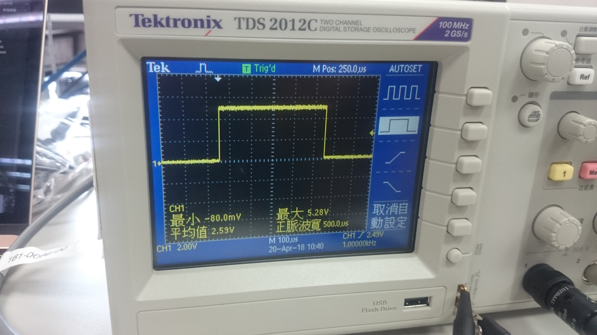
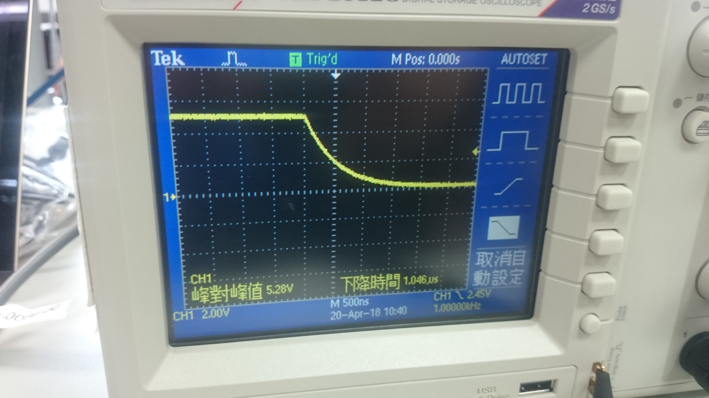

示波器用法簡介
- 探棒的使用
*小心，探棒很貴！
有一端粗頭部分要連接在儀器上
另一端有兩個分岔的頭 分別是鱷魚夾以及鉤子
可以用來接電以及接地
- 儀器及探棒的校正
首先
要先確認探棒有用矯正起子來做正確調整
要將示波器電線接好
並且將總電源打開
之後按下儀器右上方「原廠設定Default Setup」 如此，將可把儀器設定為出廠設定
- 學會看示波器
首先，先按下儀器右上方「AutoSet」按鍵
可以發現
畫面左下方CH1的部分有寫數字
它代表的是 垂直方向的刻度（此圖代表垂直方向為一格2.00V）
再來
螢幕中間M 則代表水平方向的刻度（此圖代表水平方向一格500µs）
綜合以上
我們可以知道這個方波 最高峰值大約為5V 週期為1ms
此外
還可以選擇不同型態的波來表示


- 調整垂直、水平位置
條動轉輪 可以調整水平或垂直位置
讓使用者可以選擇不同基準點來觀察此波
- 調整觸發點
上緣與下緣
將觸發點設置不同的話 會以不同方式觸發波緣
也就是更換觸發波形的標準
- 調整垂直、水平刻度
圖形會因此變異
就如平面座標一樣
刻度、尺度不同就會不同就會讓圖形不同
- 測量圖示功能
方便使用者由列表得知該波形的資訊
- 標線測量功能
有兩條輔助線，能測量之間的變化量
任意訊號產生器用法簡介
- 接線與準備
- FUNC(Function)按鍵
可以調整波形：「弦波、方波、角波、雜訊、任意波」
- 參數屬性調整按鍵
有四項參數：
- FREQ(頻率)
可以調整波形頻率- AMPL(震幅)
可以調整波形震幅（以Vpp為單位）- OFST(位移)
可以調整波形位移- DUTY(分配)
可以調整波峰與波谷之間的比例（在不變週期之下）
- 數字位數選擇按鍵
條動轉輪
可以選擇欲調整的位數
- PWM(Pulse Width Modulation)
利用數位的方式達到類比的功能
謝謝您的支持！！
您的意見 是我改進的原動力
歡迎您將閱讀後的心得告訴我 讓我可以更加進步～～
chen.oscar@hotmail.com
資訊科學系 一年甲班 陳泰元